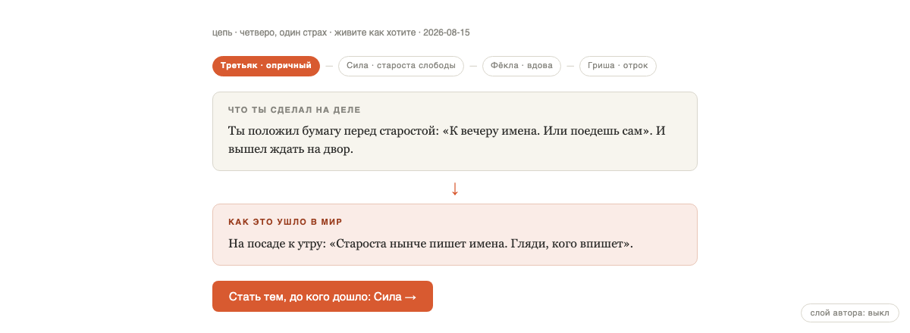
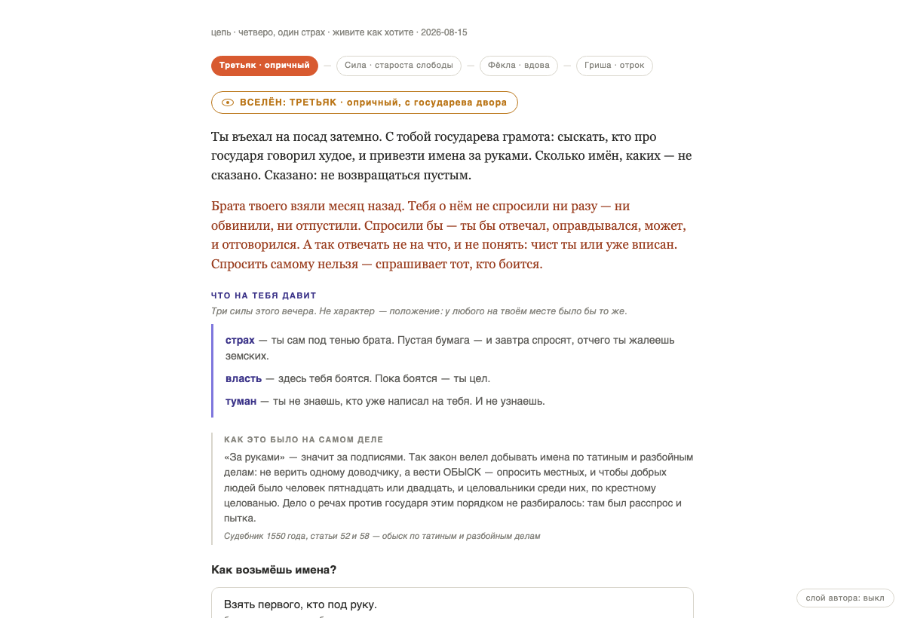

You live four people in one place, one after another. What you decide as the first reaches the second as rumour: bent a step, your name rubbed out. Then you are the one it reached. One fixed rule does the bending, and no language model is involved.

The bending is one fixed rule the engine applies, not a writer's flourish and not a model's improvisation. Twelve years later the fourth of them rides in with the same paper the first one carried, remembering the beginning wrong.

The form was settled: you are inside one fate, not outside it holding a case file. Solving a stranger's soul is closed as a subject. The reason is plain — once the player has an answer to hand in, the game becomes a questionnaire, however good the wording.
Too much psychology. The engine still runs on need and scar, but none of that vocabulary reaches the screen. What shows is fear, power, fog, shame, hunger — as circumstances, not as fields. One line used to print how a character read someone's gesture, and that turned people into mechanisms. Only the everyday consequence goes out now.
A scar is a biography, not a category. Each one was given three concrete stories and each story its object in frame. Two women with the same wound stopped saying the same sentence, and the pool of cases went from twenty-five to seventy-five.
A table game — who to invite, who sits where — was built, played and dropped. Five people at a line each per turn is a wall of text with nothing picked out. Worse, you could not see what changed because of your decision. Complexity had arrived before clarity.
The unit of the game is one choice seen from inside one person. A whole world running above is handsome and has no nerve in it; a single choice can be finished in an evening and judged.
A solver was run against the case generator to find out whether cases are solvable at all. Watching manner doubles the odds, provoking triples them: 24 to 48 to 84 per cent. Cases that fail the solver never reach a player.